大方廣圓覺修多羅了義經心鏡卷第四
○威德自在菩薩章
實相體寂。因元靜乃稱止。本覺虗照。因常明故曰觀。妄風俄動。假妙奢摩他而止之。心珠久昏。須毗婆舍那而觀矣。故聖人設教。非秪一端。或止或觀。或云諦境。或云止觀。病既多端藥亦隨轉。威德。隨順覺性。承佛圓音。啟三觀雄規。導四門之正路。故有此章之義也。
於是威德自在菩薩(至)不因修習而得善利。
請法儀式。與前釋同(次正問)。
世尊譬如大城外有四門(至)如是三請終而復始。
實相是一法。佛說種種名。今言四者。且略而言之。四門者。空門。有門。亦空亦有門。非空非有門。佛世。有四外道。云供養佛得福生天。我只要生天。不要證阿羅漢。一人先去供養佛了。便要去。佛云。諸行無常。此人掩耳而走。第二人來亦如是。欲去。佛云。是生滅法。掩耳而走。第三人亦如然。臨去。佛云。生滅滅已。掩耳而走。第四人亦如是。供養了便欲走。佛云。寂滅為樂。又急掩耳而走。四人去後。共在一處聚問。你見佛如何。一人云。佛說諸行無常。一人云。是生滅法。一人云。生滅滅已。一人云。寂滅為樂。四人共聞一偈。俱證阿羅漢。一偈是圓覺。四句是四門。隨汝一句而入。云方便者。即漸次。聖人設方便。非止一端。證有漸次。根性既殊。所修差別。所證淺深。階降不同。大寂滅海。如搗萬種香為丸。燒一丸具足眾氣。眾流入海。同一醎味。即圓覺海會(下明許說并答三觀)。
爾時世尊告威德自在(至)及諸大眾默然而聽(初明由致)。
善男子無上妙覺徧諸十方(至)循性差別當有三種。
無上者。眾生無上佛是也。妙覺證之極也。亦可云覺者照也。照即是觀。即今之所示三觀也。妙者。空即假中。假即空中。中即空假。三觀互融。故為妙。如楞嚴妙奢摩他。亦如此解。今向下正明三觀。必其然也。徧諸十方者。覺性亦名實相。亦名真如。亦名空如來藏。三世十方諸佛。皆依此三出生。出生即修證。依大圓覺妙理。修之證之。不依此妙覺真如理觀修之。即我見等無明業識。命根不斷。行法云。十方諸佛。從方等生。不獨是修之得成佛。亦依此迷之。而入生死。生佛雖殊。妙理平等。但有迷悟之殊。非佛性有悟迷。乃佛生自有悟迷也。生佛一如。故曰無二。若迷圓覺。循性差別。何止百端。今且言修圓頓三觀者。故云。圓攝所歸的分三種(次正明空觀)。
善男子若諸菩薩悟淨圓覺(至)諸如來心於中顯現。
奢摩他。涅槃經名為能滅。滅煩惱故。又云能調。調諸極惡不善法故。又曰寂靜。又曰遠離。天台云。對觀名境。對止為諦。天台影望三觀。立止名。一奢摩他。體真止。凝心安其理。謂之畢竟空。以三觀解之。奢摩他。空觀也。破一切法。又云一念無相謂之空。二乘以此空。破見思惑。證真諦理。大乘亦空一切相。破無明惑。今論大乘空義也。修圓覺者。普眼章中。所謂宴坐靜室。然後凝心。息攀緣。取靜為行。因澄念故。用心太切。覺識煩動。於中客塵銷落。佛頂云。猶如行客。不得久住。若實主人。畢竟不去。塵垢既去。覺心輕安。澄之久久。靜慧虗明。大圓鏡中。十方世界。諸如來心。於中顯現。此非論聖人果地。且在凡夫見前。須歸自心一念。虗妄浮心。荊溪云。見思王數。此是破塵合覺。所在處所。不可不知。今經意。且先用妙止安妄心。此亦與楞嚴同。但彼文云。返流全一。六用不行。十方國土。皎然清淨。如流璃內懸明月。乃至一切如來。密圓淨妙。皆現其中。意無殊此(下引喻結空觀)。
如鏡中像此方便者名奢摩他。
境觀者。如人咽喉之病。今正明用妙止。止其眾生散心。此用麤心造次不得。末世修圓覺者。須是依師友。以軟善心調治。若只將聖人聖寶言下尋之。於道轉遠。聖人說方。依之自服。則取効矣。今引鏡像。乃喻觀成。若依若正。並無妨礙。依即正。正即依。依是十方世界。依報也。諸如來心。正報也。觀成之後。依正自融。本只為迷情強隔。分依分正。若觀成情遣。塵去鑑淨。現像非關磨者。則鏡無現像之功像無涉鏡之德。終自炳然。無有罣礙。六祖云。菩提本無樹。明鏡亦非臺。本來無一物。自不惹塵埃。結云。此方便者。名奢摩他。妙止也。今圓家論境觀。須知境觀互融。本無有二。今就偏宜用止。或用止之不悟。即此止便是觀。但止屬止散。觀屬朗。心雖止而不散亂。如枯木。無用。縱三條椽下。數載春風。兀兀然。雖年深而無益。更須抖擻精神。用觀朗之。見一念覺性。昏再朗之。朗處。如暗室遇燈即明。要朗時。不得將心攀緣。用思惟心測度。以無思惟。銷滅諸暗。如澄水法。但不動此念。水自合理。只為水體元清。眾生自濁。今還本體。恐有人不用意鋟削。故以苦口言之(次明假觀。且以觀當名。天台云。方便隨緣止。若境觀互融。止觀一體也)。
善男子若諸菩薩悟淨圓覺(至)是諸菩薩所圓妙行。
涅槃名毗婆舍那。此經名三摩鉢提。名正見。又名了見。又名能見。曰徧見。名次第見。名別相見。是名慧。慧即觀。即假觀也。天台云。方便隨緣止也。止名為定。體屬慧法。修圓覺菩薩。用假慧出假化物。登住聖人。出假有十六門。先證圓覺涅槃空。從此空。出建立假。度生。故悟淨圓覺。既證淨心。如鑑照物。六根六塵。一一體之。皆是幻化。雖知根塵是幻。以何法滅此虗幻。光明云。心如幻化。馳騁六情。欲滅此幻。還依幻心。復起幻觀。始覺也。觀此根塵之幻。故云即起諸幻以除幻者。雖用幻觀。滅於幻化。出假自有十六門。被機既多。幻豈只用於一。病變藥變。如人四百四病。豈以一藥治之。故云變化諸幻。而開幻眾。如昔有人到五臺山。一僧附書。託尋薩苛與之。及抵京徧尋。皆無有也。後見街路趕猪人。呌薩苛。遂問之。答云。內一大者。名薩苛。群眾中著渠一箇不蹤橫。遂度書與之。起立看書。便立死。皆是菩薩出沒合變。應機化物。由此善用其心。幻智漸增。幻機漸度。此謂之破塵沙惑。故云內發輕安。舍利弗出假。行六度。外道乞眼珠。取珠與之。外道弃地。身子嗔心起。退落五道凡夫。非大忍辱力。孰能為之。故云漸次增進。彼觀幻者。且指菩薩度生。非同幻故者。無機可度。蓋眾生本性空寂也。非同幻觀。即始覺之智。用此智攝生。眾生性空。我性亦空。亦是境觀俱空。亦機應雙亡。幻境幻觀俱泯。機緣感應無差。既亡能所。則幻相永離。楞嚴云。入流亡所。所入既寂。動靜二相。了然不生。所圓妙行。亦復如是(下引喻結假觀)。
如土長苗此方便者名三摩鉢提。
假觀屬有也。立一切法。亦數法。故云三摩。三乃數也。森羅萬象。皆依圓覺妙心。一切幻化。從覺心生。如土長苗。若無覺心。幻不能生。若無幻覺。覺幻不滅。滅幻之覺如苗。幻滅覺圓。如苗歸土。皆是聖人方便門。名三摩鉢提也(次明中觀。即止觀平等)。
善男子若諸菩薩悟淨圓覺(至)及與身心相在塵域。
天台云。禪那。息二邊分別止。亦云止觀平等。前奢摩他。以寂靜為相。三摩提。以幻化為相。禪那俱離寂靜幻化二相。若三觀言之。即空。即假。即中。禪那乃即空假歸中。亦可空有俱中。三觀互融。亦可無空無假而不中。天台出時。楞嚴圓覺未傳中國。天台於止觀中云。此三止名。雖未見經論。今影望三觀。隨義立名。其相云何。體無明顛倒。即是實相之真。名體真止。如此實相。徧一切處。隨緣歷境。妄心不動。名隨緣方便止。生死涅槃。靜散休息。名息二邊分別止。孤山云。楞嚴阿難雖請於止。以即一而三故。止觀亦即平等。三一互融。是以稱妙。以由妙故。方曰楞嚴大定也。今云悟淨圓覺者。且言菩薩。從聞圓覺。至思修。修而證。破虗妄已。發其真明。未說極證。且說初住一分真明。故云悟淨圓覺。此真淨。乃空假即中之淨。復以此淨心。知覺心性。即知四大妄身。假和合。畢竟無體。次云及與根塵。方知六塵緣影。虗妄浮心。亦是幻化。此之幻化。若不消落。仍是生死。菩薩復於幻心。起於幻智。幻智始覺。以此始覺寂照。照於根塵。十八界等。消落幻化。故云以除幻者。以者用也。用幻智。除幻妄。幻者是誰。誰是幻者。騎牛覔牛。斯之謂矣。今言悟淨圓覺者。此菩薩。從聞思修。以證覺性。無明冰消。心淨如水。故云淨圓覺。以此淨慧。照了法相。不屬有無。故云不取幻化。假觀屬有法。及亦不取靜相。靜是止。亦是不取空假二觀。即空假歸中。冰化為水。唯一無二。故云不取靜相。云靜相者。相本是境。亦是空觀。今要見空。即是假。故云靜相。用中道禪那。正觀觀之。了知身心。身心是色質。可是罣礙。今了知皆是空華。自然心無罣礙。既無罣礙。遠離顛倒夢想。到此無眼界。無意識界。無無明。乃至無老死。無苦集滅道。無智亦無得。今云無智覺者。知屬心。明屬見。知見俱泯。遊心法界諸心寂。如日依空復不住空。既絕根塵。不依諸礙。永得超過。礙無礙境。能觀之智。亦乃不留。若留。智還為障。還為礙境。此境名為覺相。亦不可留。境觀雙融。百尺竿頭坐底人。雖然得入未為真。百尺竿頭進一步。十方世界現全身。受用世界依報也。及與身心正報也。相是世間相。不離塵勞。具諸佛法。故云相在塵域。不局在一身一心。色心依正。剎剎塵塵。一一皆不離自性。故謂之域也(下引喻)。
如器中鍠聲出于外。
鍠音皇。此喻中觀。即空是中。即假是中。空即無。假即有。要知有無。不相留礙。器中鍠。眾說不同。有云鍾磬為皇。有云聲是色。器亦是色。二色不相妨礙。今觀中道。即二邊為中。世俗。皷中間。以鐵器為皇。在皷內。及鳴皷時。皇聲于外。今此觀成。了生死涅槃。色心依正。畢竟無二。一一皆歸正性明顯。寂滅極處。內發輕安。心輕故。徧一切法。皆是佛法。身輕故毗盧遮那。徧一切處(下合法。結中觀)。
煩惱涅槃不相留礙(至)此方便者名為禪那。
煩惱即生死。涅槃不生滅也。生死即涅槃。二俱不留礙。又煩惱即俗諦也。涅槃即真諦也。真即是俗。俗即是真。二亦無留礙。煩惱如冰。涅槃如水。冰即水。水即冰。亦二無二。不相留礙。真性自通。通即不相留礙。既煩惱融為法性。法性即空慧發明。內自寂滅為樂。若身若心自然輕安。輕安。即神通也。此非究竟佛。謂之妙覺。初住聖人。隨順寂滅境界。指所證寂滅為妙。自他身心所不能及。此指自他所證之極。自覺聖智。真如獨存。不屬他身心。自身心亦所不及。蓋圓覺無身心相。身他身心。所不能及。四見又何由可生。四見即我見。人見。眾生見。壽者見。今具二見。眾生壽者。壽者眾生。已包人我二見。皆為浮想。以中道種智。觀一切法。為浮想。何況自他身心。眾生壽命。我人之見。爭得不為浮乎。結云。此方便者名禪那。是佛方便。假名禪那。平等性中。佛尚不愛作。況種種假名。於我如浮雲(次引例彰圓)。
善男子此三法門皆是圓覺(至)若得圓證即成圓覺。
此三法門。即空假中三觀也。此三觀。三只是一。一即是三。破則俱破。三觀悉彰破相。假中亦然。立則俱立。妙則俱妙。成一切法。立一切法。空一切法。只為圓覺之性。具一切性。親近隨順者。則成佛菩薩。成佛菩薩。出假化物。成就眾生。未甞不由此也。故云皆依三種事業。圓證者。若非圓心。此覺不圓。圓心者。一念三千。百界千如。三千世間。乃指南之法。妙極於此。依此修證者。即頓成佛道(次校量顯勝)。
善男子假使有人修於聖道(至)一剎那頃隨順修習。
聲聞辟支。乃小聖。只修四諦。十二因緣。觀緣入道。此如一滴水。今修圓覺者。如大海水。破一切相。具一切相。等法界修。等法界證。起信云離念相者。等虗空界。無所不遍。法界一相。只是如來常住法身。亦是一切眾生本具性德。龍女一歷耳根。便往南方成佛。故云隨順修習也。如上威德所問。借鰕為眼。牟尼廣示。亦是憑虗依響。而不知如如之理。本乎一性而已。得之為悟。失之為迷。一理而已。迷之而為凡。悟而為聖。迷者自隔。理不隔也。失者自失。理不失也。三觀之作。所辨異同。而究聖性。使群生正性而順理者也。正性順理。所以覺路不紆。解脫之門至矣。不知此法門。則學何所入。功何所施。智何所發。梁氏云。去聖久遠。賢人不出。庸昏之徒。含識而已。致使魔邪詭惑。諸黨並熾。空有云云。為坑為穽。有膠於文句。不敢動者。有流於漭蕩。而不能住者。有太遠而心不至者。有太近而我身即是者。有枯木而稱為定者。有竅號而稱慧者。有奔走非道而言權者。有假鬼神而言通者。有放心而為廣者。有罕言而為密者。有齒舌潛傳為口訣者。凡此之類。自立為祖。繼祖為家。反經非聖。昧者不覺。仲尼有云。道之不明也。我知之矣。由物累也。梁氏之言。可謂救世辨惑之要。聞之者。得不自鏡。其或未然。吾末如之何也矣。
爾時世尊欲重宣此義而說偈言(至)名究竟涅槃。
○辨音菩薩章
淨名云。三轉法輪於大千。其輪本來常清淨。天人得道此為證。三寶於是現世間。又云。佛以一音演說法。眾生隨類各得解。佛不出世。梵音自何而聞。既無聞以何法修。既無修。如何有證。證者可出三界火宅之苦。辨音已離苦人。若不度生。非菩薩心也。是以吾佛。示勸證三轉法輪。雖一音舉暢。其間隨類各解不同。辨音且於圓覺門。問幾種修習。勞吾大覺。括盡生死結根。修證病源。將三種妙藥。互換湯事。總二十五種。若無心人。則二十五。皆屬剩法。既未離膏肓。聖賢欲垂救藥。故有此章進問也。
於是辨音菩薩在大眾中(至)如是三請終而復始。
辨音。因聞威德。問三觀義。且只就三種根性。釋尊開示。亦是隨所問而言之。若論機有淺深。根有利鈍。何止於三。故得辨音再問幾種修習(下戒聽)。
爾時世尊告辨音菩薩言(至)默然而聽(向下摠示二十五輪)。
善男子一切如來圓覺清淨(至)二十五種清淨定輪。
若論覺性。本自圓融。一切如來。修顯清淨圓極之理。無高下。無修習。及修習者。能所俱絕。佛不度生。大聖慈悲隆重。觀眾生心。具如來藏性。汩沒時長。故特開方便門。示圓覺性。故尼犍經云。王名嚴熾。有大薩遮。來入其國。王出遠迎。乃為王說。大王當知。依煩惱身。觀如來身。何以故。此身即是如來藏故。一切煩惱。諸垢藏中。佛性滿足。如石中玉。木中火。地中水。乳中酪。麻中油。子中禾。藏中金。摸中像。孕中胎。雲中日。是故我言。煩惱之中。有如來藏。今佛方便。欲示眾生種種藏性。廣開無量。今處中。且示二十五種。單修複修具足修。但事不過三。不出只是三止三觀。三諦三境。根有利鈍。觀有淺深。或一或二或三。諸輪綺互。若天王三目。如梵伊三點。今出三止三觀。先異同。後皆易曉。一止有二種。大止。小止。小三止者。一止息止。從破惑得名。二停止止。從能定得名。三不止止。從諦理得名。此出小乘經。大三止者。此是天台智者。影傍三觀。立此三名。一體真止。破見思惑。證真諦理。二方便隨緣止。破塵沙惑。證俗諦理。三息二邊分別止。破無明惑。證中道理。奢摩他。即體真止。凝其心。安其理。即畢竟空也。三摩鉢提。即方便隨緣止。雖名為定。體屬於慧法。菩薩出假化物。用觀法。亦翻觀。亦翻慧。義亦歸於止也。禪那。息二邊分別止。禪那翻靜慮。靜即止。空也。慮即觀。假也。空假不二而修。名中道也。三觀者。即空假中。恢揚肇自於如來。妙悟近推於智者。於一心中。宛有三用。空者破一切法。彰其蕩相也。假者立一切法。彰不壞諸法也。中者妙一切法。彰世間之相常住。荊溪云。一念無相謂之空。無法不備謂之假。不一不異謂之中。如瓔珞經。敬首菩薩。問三觀法界。諸佛自性清淨道。一切菩薩所修。三觀法門。中觀論云。因緣所生法。我說即是空。亦名為假名。亦名中道義。皆一心三觀之明文。今二十五輪。正為修圓覺者。皆依頓教大乘。覺性而修也(向下明二十五輪。單修複修具足修)。
一單修空觀
(從三觀。後七觀。用空觀在前)。
若諸菩薩唯取極靜(至)此菩薩者名單修奢摩他。
止觀云。為昏與散。翳動定明。不可隨。不可畏。隨之將人向惡道。畏之則妨修正行。此修圓覺者。先取極靜。專用止。止即定也。無明本是法性。以迷故。覆理成無明。如寒結水為冰。如眼變心起夢。今用至靜。體無明即是法性。起是性起。滅是性滅。不復更論倒惑起滅。以法性繫法性。以法性念法性。常是此性。無非性時。體達既成。不得其真。亦不得妄。還源返本。法界俱寂。是為止。又觀無明。等於法性。本來皆空。乃至一切法。無不即空。譬劫盡時。上至初禪。無非是火洞然。又如虗空藏所現皆空。又海慧所現一切皆水。介爾念起所念。念者。無不即空。空亦不可得。法界洞朗。咸皆大明。是名為觀。觀即止。止即觀。無二無別。然心神冥昧迅利。或時止之。愈馳愈散。或時觀之。愈昏愈昧。敵強力弱。鷸蚌相持。進退莫可。當方便消遣。若起決定心。強軟降魔。寂無自然深證。故云永斷煩惱。究竟成就。從此便入登圓初住。入涅槃不生滅地。分身作佛。豈小補哉。單修奢摩他者。則是單修空觀。亦乃單修體真正也。故結云。名單修奢摩他。
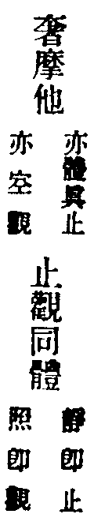
二單修假觀
若諸菩薩唯觀如幻(至)此菩薩者名單修三摩鉢提。
唯觀如幻。幻即假法也。先證涅槃空。達空法界。建立眾生。深觀幻性。即萬象森羅。達森羅性皆入幻假。為之變化世界。皆由自證覺性。謂之佛力。非是果佛加被之力。為之佛力。此是自覺性。覺即佛也。自己佛力種種作用。應遍無窮。出假化導。不住大悲。行菩薩行。雖出假化利。不失寂念。即用方便隨緣止。及諸靜慧。慧即假觀。止觀雙行。名單修三摩鉢提也。
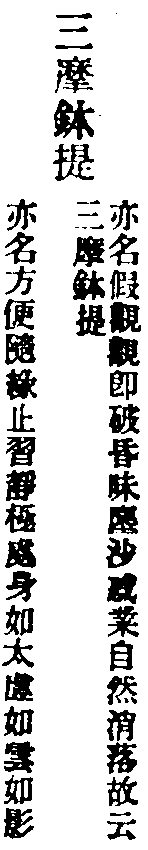
三單修中觀
若諸菩薩唯滅諸幻(至)此菩薩者名單修禪那。
此聖人入聖流。先滅諸幻。未說出假度生。此唯用獨存之智。圓照法界一相。無生可度。故云先滅諸幻。不取作用。如龍王行雨。渠自不動。作用自成。中道既息二邊。空假歸中。便證實相。名單修禪那。
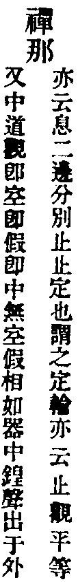
四雙修。先空。後假
若諸菩薩先取至靜(至)先修奢摩他後修三摩鉢提。
此先用止。云先取至靜。止也。照諸幻者。用假觀。照即觀也。空假二藥。自行化他。故云起菩薩行。
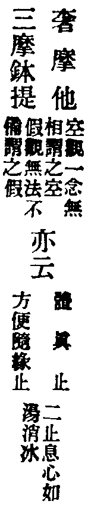
五雙修。先空。後中
若諸菩薩以靜慧故(至)名先修奢摩他後修禪那。
只將靜慧兩字。分止觀。靜者止也。慧者觀也。止觀愈進。斷煩惱。出生死。
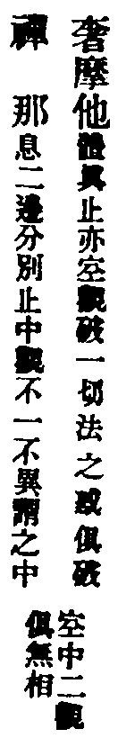
六具足修。先空。中假。後中
若諸菩薩以寂靜慧(至)中修三摩鉢提後修禪那。
此聖先以空觀。治其內病。復用假觀。利物度生。後斷煩惱。證寂滅。中觀也。
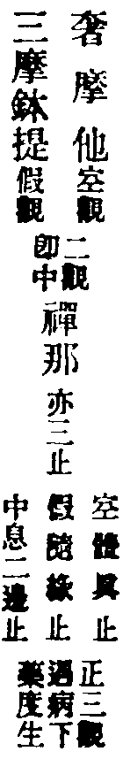
七具足修。先空。中中。後假
若諸菩薩以至靜力(至)中修禪那後修三摩鉢提。
此聖空觀。體真止。猛勇力強。頓斷煩惱。即生死結根斷已。復用中假二觀度生。即隨緣。息二邊分別二止。共成佛界。
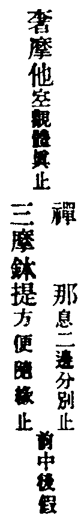
八具足修。先修空。齊修假中
若諸菩薩以至靜力(至)齊修三摩鉢提禪那。
此聖空觀力強。以圓覺妙心。頓斷煩惱。於一念中。普及有情。一吹大千世界即成。功用如是。故云建立境界也。
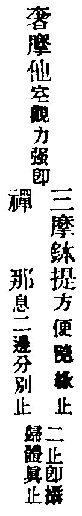
九具足修。齊修空假。後修中
若諸菩薩以至靜力(至)奢摩他三摩鉢提後修禪那。
以至靜。體真止。亦云空觀力強。復兼假觀。方便隨緣。故云資發變化。以中為體。復修禪那。破無明惑。
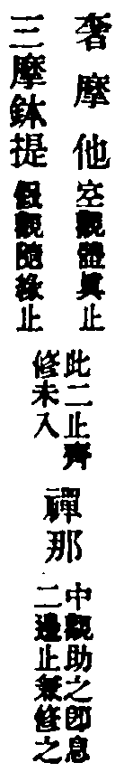
十具足修。齊修空中。後修假
若諸菩薩以至靜力(至)奢摩他禪那後修三摩鉢提。
以至靜。體真止亦云空觀。力強。以中觀潤之。用資寂滅。後以假觀。變化現前。世者。世有方位。界者。界有界分。且如釋迦。於娑婆有緣。來此隨方度生。
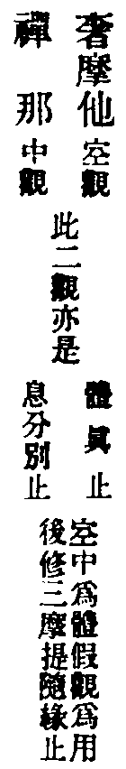
十一雙修。先假後空
(從此。後七觀用假在前)。
若諸菩薩以變化力(至)先修三摩鉢提後修奢摩他。
此先用變力度生。隨所度處。觀空入滅。
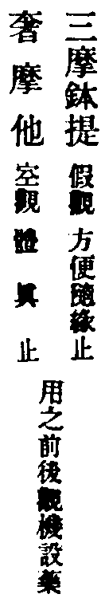
十二雙修。先假。後中
若諸菩薩以變化力(至)名先修三摩鉢提後修禪那。
此先用假觀。出建立假。故曰種種隨順。然後入真空涅槃。故曰而取寂滅。居中道觀。
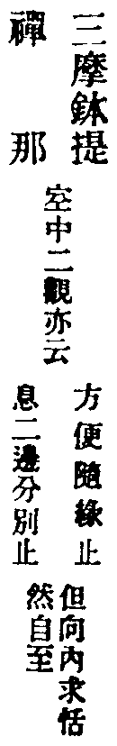
十三具足修。先假。中空。後中
若諸菩薩以變化力(至)中修奢摩他後修禪那。
以變化力而作佛事者。此聖流。出假化物。如傅大士。示迹於婺州雙林。有妻有子。種田。作世間事。若以俗眼觀之。而自愧。以道眼觀之。無非佛事。安住寂靜者。彌勒兜率內院。常說妙法。身在人間。而內院不動。古云。顛狂彌勒到明州。布袋橫挑柱杖頭。饒汝化身千百億。一身還有一身愁。
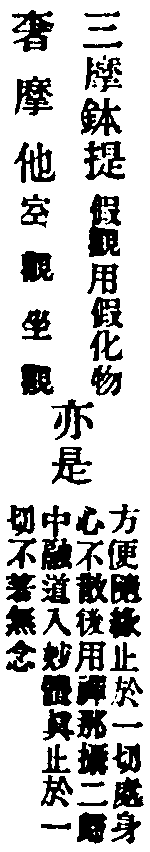
十四具足修。先假。中中。後空
若諸菩薩以變化力(至)中修禪那後修奢摩他。
此菩薩。先用假化度眾生。皆以變化。無礙作用。如持地菩薩。常居渡船處。入水。與人搬擔。種種作務。唯取一錢。豈不至靜。而取佛道。
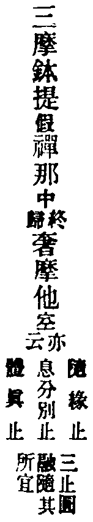
十五具足修。先修假。齊修空中
若諸菩薩以變化力(至)齊修奢摩他禪那。
以變化力。并方便。正是止名。方便隨緣止。即假觀。假觀為先鋒。空中為中軍。故云至靜寂滅。空中觀。即體真息二邊。為止二俱隨順也。
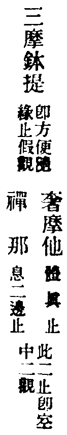
十六具足修。齊修假空。後修中
若諸菩薩以變化力(至)三摩鉢提奢摩他後修禪那。
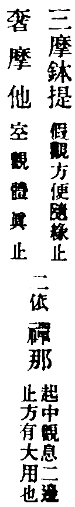
十七具足修。齊修假中。後修空
若諸菩薩以變化力(至)三摩鉢提禪那後修奢摩他。
變化。用假觀。資於寂滅。中觀也。無作靜慮。空觀也。假中。即是體用也。復入空。復入靜慮。可謂坐籌幃幄。有決勝千里之功。
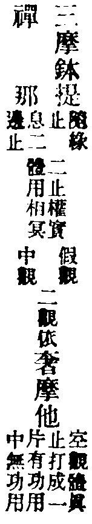
十八雙修。先中。後空
(此去七觀用中在前)。
若諸菩薩以寂滅力(至)名先修禪那後修奢摩他。
此聖。用中道。即圓覺一性也。此性不守。發而為靜。為空。破一切相。蕩一切法。凡起修。以此觀照之。立一切法。無法不足。
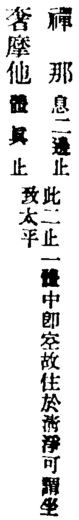
十九雙修。先中。後假
若諸菩薩以寂滅力(至)名先修禪那後修三摩鉢提。
此聖用中道。寂滅理上。而用假。故云而起作用。於一切境。用中道照之。故云寂用隨順。辦一切事。無事不辦。
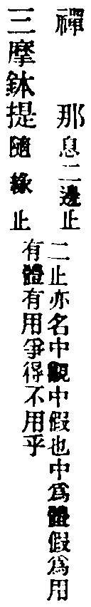
二十具足修。先中。中空。後假
若諸菩薩以寂滅力(至)中修奢摩他後修三摩鉢提。
此從中道第一義諦。起種種自性差別。亦用空觀發用。如火得空則明。水得空則瑩。變化萬端。攝化一切。即假觀之力。
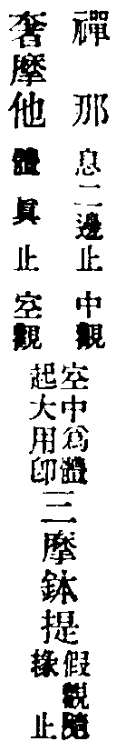
二十一。具足修。先中。中假。後空
若諸菩薩以寂滅力(至)中修三摩鉢提後修奢摩他。
此聖用中觀。絕待為義。妙一切法。無越於中。只常智無緣。無緣而緣。無緣大慈。謂之無作自性。雖起作用。終歸于空。作用假也。如鍾在架。扣之則鳴。鍾者。中道觀也。鍾內中空。空觀也。扣之鳴。假觀。中空假三觀。發用也如此。
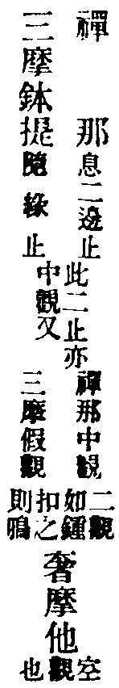
二十二。具足修。先中。齊修空假
若諸菩薩以寂滅力(至)齊修奢摩他三摩鉢提。
先修中觀。即祕密藏。包含種種諸法。於諸法中。常照而寂。亦寂而照。故云起於變化。名不虗得。
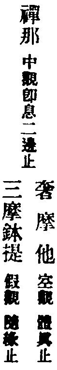
二十三。具足修。齊修中空。後修假
若諸菩薩以寂滅力(至)後修三摩鉢提。
此聖。用中道寂滅力。資於至靜。中道如水。至靜如清。而起變化。如水上波。波亦無窮。浪亦無盡。其假也如是。
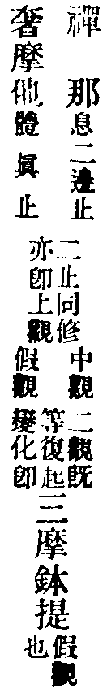
二十四。具足修。齊修中假。後修空
若諸菩薩以寂滅力(至)三摩鉢提後修奢摩他。
此聖流。中道有力。并假觀熏動。資於變化。至靜空觀。如太清天。清而且明。安致是中。左右逢原。
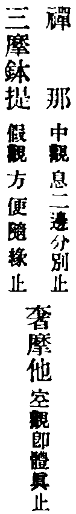
二十五。圓修三觀。三止
若諸菩薩以圓覺慧(至)自性清淨隨順。
此菩薩。圓修三觀三止。以圓覺慧。圓合一切者。圓覺即中道第一義諦。亦名常住真心。亦云性淨明體。亦云本覺。亦云空如來藏。亦是法華經藏。修而顯之。具一切名。通一切法。在迷。為惡為愚。為癡為三毒。為婬怒癡性。為殺為盜。為邪見為魔。為諸阿顛迦。為昏鈍性障。為性惡。具無量名。為之性惡法門也。今言為佛為圓覺。就修顯立名。為真諦為俗諦。為真俗不二。為中道。為真諦者。即凡聖色聲因果等法。皆無自性。謂之性空。亦非研究而空。乃本來空也。是名空觀也。俗諦者。於性空中。具足諸法。無所不遍。自他無礙。毫剎含容。亦即假觀。本來具也。然此真俗。二無二也。混而為一。而未甞為一。離而為二。未甞二也。當知即中道觀也。此三諦觀。即圓覺性。寂而照。照而寂。圓合一切。於諸性相者。性真諦也。相俗諦也。亦向真俗二諦。二諦即一。豈離覺性。以覺性。遍在一切眾生心中。生即是佛也。以眾生心中覺性在佛。佛即眾生。生即是佛。佛即是生。生佛平等。覺性在地獄。地獄即佛。佛即地獄。其鬼畜生人天。何莫由斯。於一切法上。用三觀照之。了之於身心。脫之見解。非今始悟。由本不迷。佛也。生也。一而已矣(次結成正因)。
善男子是名菩薩二十五輪一切菩薩修行如是。
此二十五輪。本被機修證。若論機緣入道。若權若實。若偏若圓。有利有鈍。何止二十五。經中自云。若諸菩薩。於一輪中。有若諸。關涉多少。故不能窮理盡性也(次摠示修習法戒)。
若諸菩薩及末世眾生(至)一念疑悔即不成就。
此示菩薩。末世眾生。須依教修之。若不依輪次。終成虗設。梵行者。即不婬慾。淨身業也。寂靜。淨口業也。思惟。淨意業也。三業清淨隨智慧行。為之求哀懺悔。經三七日者。尅期也。二十一日中精進。謂之尅時破障。域意修真。二十五輪。各安標記。至心求哀。此言凡夫淺識。觀力未著。須依事相。如假船過渡。用筏到岸。書二十五名於籤上。於佛前。誠心禱之。乞求冥力加被。勿起少疑心。祈禱懺悔已。至於三七日。誠心深固。為之。即非造次。然後信手抽籤。不宜簡擇。依結開示。或頓或漸。依教修行。者自的樂一門。隨便修習。既勝劣難分。不能自決。故憑聖力。以卜應脩。當即依結以修。無得復貪餘觀。若單修一輪。并圓修三觀者。此名為頓。若兼修互修者。此名為漸。此漸。非漸教之漸。此則同以圓覺。發觀之始。同緣實相。同以上品寂光為觀體。但根有利鈍。證有先後。為之漸也。不問遲鈍聦利。但心懷疑悔。即不成就也。
爾時世尊欲重宣此義而說偈言。
辨音汝當知一切諸菩薩(至)不久證涅槃。
偈與長行無異義也。有唯除頓覺人。并法不隨順。二句不免重釋。圭峯云。唯除上根圓頓悟解之人。并及於一切定相之法。不隨順者。則不必具依二十五輪。及道場探結等。不隨順法者。不取相也。既不隨相。即隨真覺。此乃頓入圓明。觸目合道。不可加之以繩索。無瘡自疣也。是前知幻即離。不作方便等類。故云唯除之矣。
釋迦老子性顛蹶 蜘蛛網撈水底月
辨音不解拈金彈 斷貫索繫天邊鴈
二十五輪更互修 得便宜處便垂鈎
錦鱗不在絲輪上 莫向煙波深處求
大方廣圓覺修多羅了義經心鏡卷第四